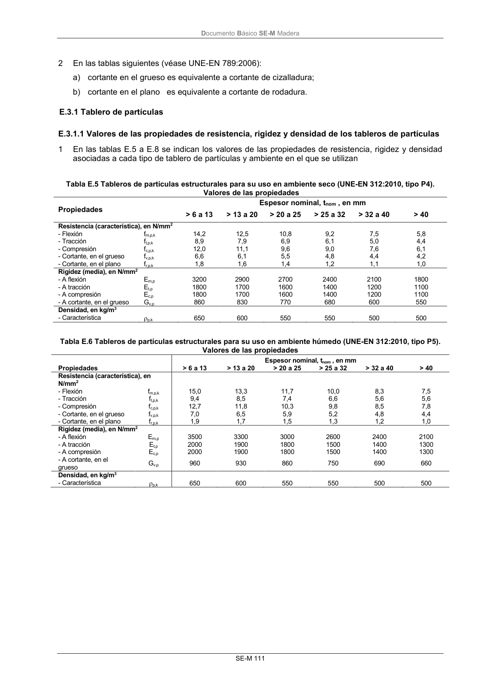

DB-SE-M Madera · edición 2019-12-20 · capa oficial
Documento DB-SE-M-oficial · SHA-256 del PDF 26b5819839ebfda78b0b119c5e76a0a37773b0d763c05688541870075df93718
Copia fiel del PDF fuente · Fuente oficial
Ficha de la disposición en la fuente oficial
Formatos: JSON del segmento · Markdown
> 40 Resistencia (característica), en N/mm2 - Flexión fm,p,k 14,2 12,5 10,8 9,2 7,5 5,8 - Tracción ft,p,k 8,9 7,9 6,9 6,1 5,0 4,4 - Compresión fc,p,k 12,0 11,1 9,6 9,0 7,6 6,1 - Cortante, en el grueso fv,p,k 6,6 6,1 5,5 4,8 4,4 4,2 - Cortante, en el plano fr,p,k 1,8 1,6 1,4 1,2 1,1 1,0 Rigidez (media), en N/mm2 - A flexión Em,p 3200 2900 2700 2400 2100 1800 - A tracción Et,p 1800 1700 1600 1400 1200 1100 - A compresión Ec,p 1800 1700 1600 1400 1200 1100 - A cortante, en el grueso Gv,p 860 830 770 680 600 550 Densidad, en kg/m3 - Característica p,k 650 600 550 550 500 500 Tabla E.6 Tableros de partículas estructurales para su uso en ambiente húmedo (UNE-EN 312:2010, tipo P5).
